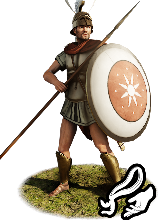
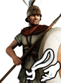
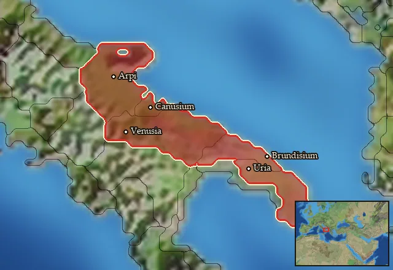

Messapian Hoplites


Class: spearmen · Category: infantry · Men per unit: 40
Description
“The Greeks called this territory Messapia, from their leader; before which it was called Peucetia, from Peucetius, the brother of Oenotrius, and was comprised in the Sallentine territory – Pliny the Elder (Natural History 3.99)
Representing the traditional military elite and landowning nobility of Messapia, these Hoplites wear the classical Hellenic heavy panoply adapted to the South Italic warfare. Drawn from the ruling families of the Sallentina or Messapian peninsula, these noblemen march to battle in a dense hoplite style phalanx designed to smash opposing lines through the brute weight of their formation. They are armed with thrusting spears (dorata) and carry (in RIS purely decorative) straight, double-edged xiphos or curved machaira swords for hand-to-hand combat. Their primary defence is the heavy bronze Argive shield (aspis), decorated with mythological beasts, gorgoneia, or solar starbursts, a common Hellenistic motif that is very popular in southern Italy. As additional protecion, they wear bronze muscle or Italic triple-disc cuirasses and composite linen corselets (linothorakes), paired bronze greaves, and crested bronze helmets of Apulo-Corinthian, Attic, or Illyrian designs. Their full panoply gives these men the well-deserved status of the heaviest infantry unit of the Messapians, ready to be sent to battle wherever danger is most pressing. They might aspire to save nearly hopeless situations, changing the odds into a glorious victory by their military feats.
Historical background
The Messapians were an Indo-European people whose language belonged to the Paleo-Balkanic branch, occupying the southern third of pre-Roman Apulia on the Salento peninsula (Matzinger, Tria Corda (2025), pp. 94–96; Yntema, 'The Pre-Roman Peoples of Apulia (1000‒100 BC)', in: Farney and Bradley (eds.), The Peoples of Ancient Italy (2017), p. 337). Over the course of the Iron Age and Archaic period, these Italic communities developed from dispersed, small-scale tribal settlements into an increasingly complex network of highly organized, stone-walled proto-urban centres such as Cavallino, Vaste, Ugento, and Oria (Yntema (2017), pp. 337, 359; Lombardo, s.v. 'Messapians, Messapia', in: Brill's New Pauly [2006]). Alongside this political evolution, the Messapian aristocracy restructured their society from localized subsistence farming to an advanced market-focused economy, transforming the landscape to produce bulk commodities such as wool, wine, olive oil, and horses for broader Mediterranean trade networks (Yntema (2017), p. 337; Semeraro, 'Methods and Practices in Studies of the Economy of Messapia', in: D'Andria and Semeraro (eds.), Messapia (2022), pp. 3–16).
From the 6th century BC onward, intense interaction with neighbouring Magna Graecia, most notably Metapontion and the Spartan colony of Taras, led the Messapian nobility to adopt Hellenic prestige markers (Matzinger (2025), pp. 97–98; Lombardo [2006]). Elite residences and graves feature imported Attic and Italiote red-figure kraters, bronze sympotic services, and the classical hoplite panoply (Mannino, 'Consumption of Luxury Goods and Art', in: D'Andria and Semeraro (2022), pp. 49–64; D'Andria, 'Economy of the Cult in Messapia', in: idem, pp. 33–48). This acculturation was shown by great projects of monumental architecture such as the 4th-century BC Athenaion of Castro, for which Tarentine craftsmen were commissioned to construct a great Doric temple and a colossal statue of Athena (D'Andria (2022), pp. 37–38). By the late 4th century BC, the Messapian elite increasingly embraced the ideals of the Macedonian world, decorating subterranean chamber tombs with frescoes and stone reliefs of armoured warriors and mythological allegories (Mannino (2022), pp. 58–59).
The heavy bronze equipment of the hoplite found extensive usage among South Italic elites, with items such as bronze muscle cuirasses, aspides, and greaves appearing abundantly in local warrior graves (Burns, The Cultural and Military Significance (2005), pp. 82–94, pp. 108–120). As Burns highlights, Greek-style muscle cuirasses and anatomical greaves "had a tremendous influence on south Italic armour design and remained in use in South-eastern Italy for at least two centuries and probably longer" (Burns (2005), p. 94). The Apulo-Corinthian helmet, a native Italic design derived from Greek Corinthian prototypes (Paddock, The bronze Italian helmet (1993), pp. 86–88; Burns (2005), p. 121) is frequently found in elite warrior burials across Apulia and Messapia, where high-value bronze armour served as a key indicator of aristocratic rank (Burns (2005), pp. 47–50, Mannino (2022), pp. 49–54).
Despite their adoption of Greek military panoply, the Messapians maintained a fiercely independent identity, regularly clashing with the Italiote Greeks, especially the Tarentines (Antiochus fr. 14 Jacoby apud Strab. 6.3.2; Paus. 10.13.10). In 473 BC, the Messapians crushed the armies of Taras and Rhegion (Hdt. 7.170; Diod. Sic. 11.52). In 303 BC, the Spartan general Kleonymos campaigned in southern Italy and brought the Messapians into alliance through diplomatic overtures (Diod. Sic. 20.104.1–2). During the Pyrrhic War (280-275 BC), Messapian contingents fought alongside Pyrrhos of Epeiros, contributing to the king's allied army of 20,000 horse and 350,000 foot (surely an exaggeration). As Plutarch tells us: “The people sent ambassadors to Pyrrhos, not only from their own number, but also from the Italian Greeks. These brought gifts to Pyrrhos, and told him they wanted a leader of reputation and prudence, and that he would find there large forces gathered from Lucania, Messapia, Samnium, and Tarentum, amounting to twenty thousand horse and three hundred and fifty thousand foot all told. This not only exalted Pyrrhos himself, but also inspired the Epeirots with eagerness to undertake the expedition”. (Plut. Pyrrh. 13). Following Pyrrhos's later departure from Italy, the Messapians held out until 266 BC, when the consular armies of Rome crushed their resistance and integrated them into the Roman system of alliances (Fasti Triumphales Capitolini, II, XX).
Following the Roman conquest and the establishment of a Latin colony at Brundisium in 244 BC, the political landscape of Messapia was fundamentally restructured (Yntema (2017), p. 358). Over the course of the late 3rd and 2nd centuries BC, 19 of the 26 native walled proto-towns dwindled into insignificance as Brundisium expanded into the region’s prime commercial and military hub (Yntema (2017), p. 359). While the life of the native tribesmen suffered disruption and economic dislocation, the pro-Roman Messapian aristocracy flourished and "lived like princes", burying their dead with a “dazzling display of wealth” (Yntema (2017), p. 359). The elite Messapian clans formed close ties with the Roman senatorial aristocracy: Dasius of Brundisium commanded the Roman garrison of Clastidium during Hannibal's invasion in 218 BC and “was induced by a moderate bribe of 400 gold pieces to betray Clastidium to Hannibal” (Liv. 21.48, Yntema (2017), p. 363). Quintus Statorius from the south Apulian clan of the Thaotoridas (this name was derived from the Messapian god Thaotor, Latinized “Stator”) was one of the most trusted lieutenants of the Scipio brothers in Spain: in 213 he was sent to king Syphax of Numidia in order to train Numidian infantry to fight against the Carthaginians (Liv. 24.48, Yntema (2017), p. 363). The poet Ennius from Rudiae also entered the inner circle of the consul Marcus Fulvius Nobilior (Yntema (2017), p. 363). Following decades of service, as allies in Roman armies, the Messapians were increasingly Romanized until the Lex Plautia Papiria (89 BC) made all free Messapians Roman citizens, thus fully integrating them into the Roman Republic (Yntema (2017), pp. 363–364).
Stats
| Rank in roster | ||
|---|---|---|
| Men per unit | 40 | ███······· 30% |
| Attack | 10 | ██········ 20% |
| Charge bonus | 15 | ██████···· 60% |
| Defence | 41 | ████████·· 77% |
| · armour | 10 | █████····· 54% |
| · defence skill | 26 | ████████·· 79% |
| · shield | 5 | ██████···· 56% |
| Morale | 11 | ████······ 39% |
| Discipline | Normal | |
| Training | Highly trained | |
| Recruitment cost | 1,620 dn | ███······· 25% |
| Upkeep per turn | 590 dn | ████······ 37% |
| Turns to recruit | 2 |
Weapons
| Primary | Secondary | Primary | Secondary | Primary | Secondary | Primary | Secondary | ||||
|---|---|---|---|---|---|---|---|---|---|---|---|
| Attack | 10 | — | Type | melee · blade | — | Damage | piercing | — | Properties | Light spear (braced against cavalry charges from the front) · +8 attack against cavalry | — |
| Charge bonus | 15 | — |
Defence
| Primary | Secondary | Primary | Secondary | Primary | Secondary | Primary | Secondary | ||||
|---|---|---|---|---|---|---|---|---|---|---|---|
| Total | 41 | — | Armour | 10 | — | Defence skill | 26 | — | Shield | 5 | — |
Condition and terrain
| Hit points | 1 | Ground: scrub / sand / forest / snow | -1 / -1 / -4 / -1 | Charge distance | 30 | Formations | Square |
Technical stats
| Time between blows (primary / secondary) | 2.5 s / — | Collision mass per man (1.0 is normal) | 1.22 | Spacing between men: close / loose | 1 × 1.05 m / 2 × 2.4 m | Default ranks | 5 |
| Extra fatigue in hot climates | 2 |
In battle: Can sap · Good stamina
Who can recruit it
A core roster unit for one faction, which can raise it anywhere it holds the right building:
Any faction holding one of the provinces below can field it.
Exactly what a settlement must have, route by route (3)
| For | Building | Also requires | For | Building | Also requires | For | Building | Also requires | |||
|---|---|---|---|---|---|---|---|---|---|---|---|
| Messapians | Direct Rule | Tier 2 Military Industrial Complex · Tier 2 Colony | Messapians | Homeland | Garrison Building or Tier 1 Military Industrial Complex | Every faction except Messapians (area-of-recruitment unit) | Any settlement | Tier 2 Military Industrial Complex · Messapian area of recruitment · Dependency or Indirect Rule · Tier 1 Colony not built |
Areas of recruitment

| Zone | Provinces | ||||||
|---|---|---|---|---|---|---|---|
| Messapian | 5 |